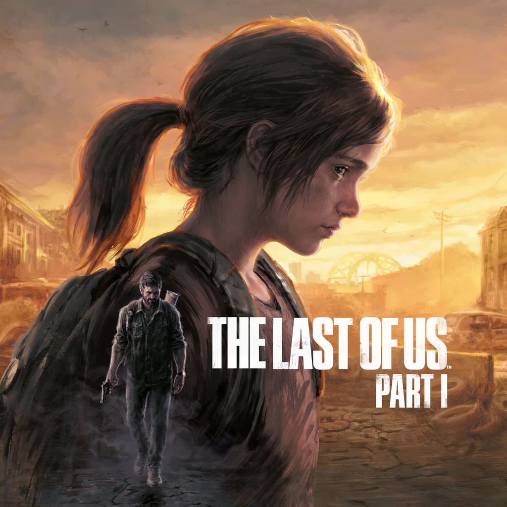
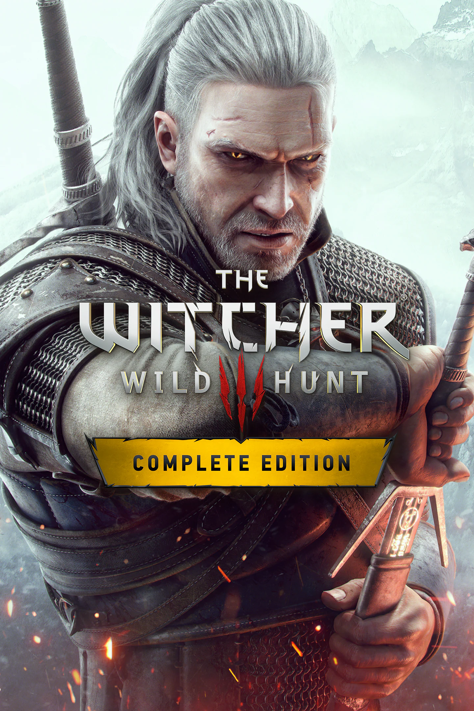
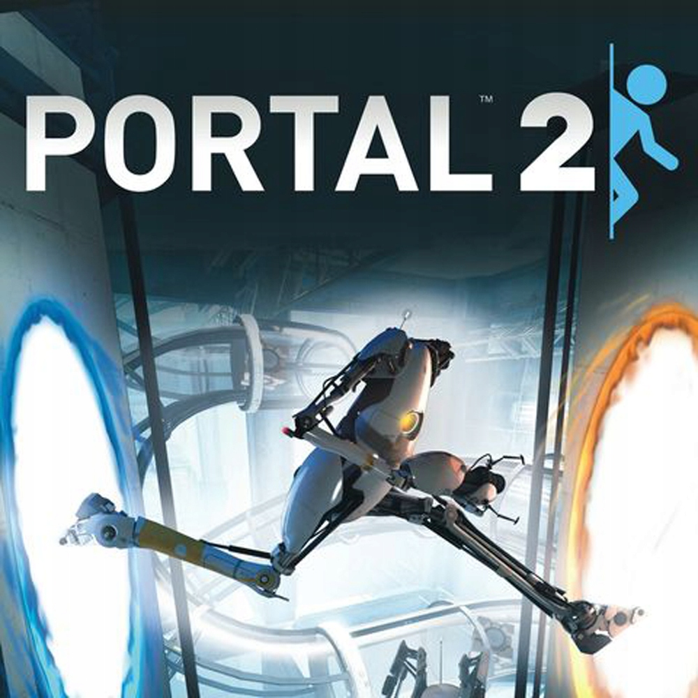
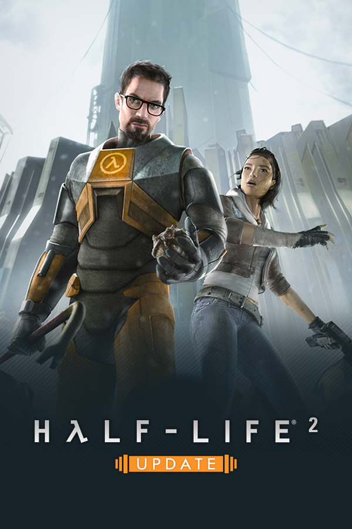

|  |
The Last of UsExperience the emotional storytelling and unforgettable characters in The Last of Us, winner of over 200 Game of the Year awards. In a ravaged civilisation, where infected and hardened survivors run rampant, Joel, a weary protagonist, is hired to smuggle 14-year-old Ellie out of a military quarantine zone. However, what starts as a small job soon transforms into a brutal cross-country journey. Includes the complete The Last of Us single-player story and celebrated prequel chapter, Left Behind, which explores the events that changed the lives of Ellie and her best friend Riley forever. |
The Witcher 3: Wild HuntYou are Geralt, from the city of Rivia. All around you the towns and settlements of the Northern Kingdoms are being razed to the ground, as an otherworldly invading army known only as the Wild Hunt leaves a trail of blood-soaked destruction in its wake. As you prepare for a thunderous confrontation with the Wild Hunt, you'll uncover a complex, gripping story and meet unforgettable characters. While exploring the Northern Kingdoms, you'll discover that mysteries lurk inside every village, tree, and shadow. |
 |
|  |
Portal 2The first Portal might be one of the best physics demos ever made. It's a tight, funny puzzle experience that also introduced audiences to one of video games' most iconic villains, GLaDOS. But then Valve followed it up with Portal 2, showing that there was so much more to explore in Aperture Science's deranged depths, from experiments with moon rocks to the use of AI for more diabolical ends. The game is hilarious, with the addition of Wheatley and Cave Johnson among some of its highlights, and the puzzles are more involved and challenging. What catapults it so high on our list, though, is its heart. It's a game filled to the brim with joy, whether you're learning to love a potato or messing with friends in its multiplayer mode. Portal 2 not only shows what you can do with a sequel but also how to make a game you can love. |
Half-Life 2The original Half-Life is often credited as being among the first narrative-driven first-person shooters, but Half-Life 2 only built on the world Valve established with its 1998 release. Engaging gunplay and a groundbreaking physics system took center stage when Half-Life 2 was released, but the open-ended narrative and creative world has spawned fan speculation and engagement even two decades after the game came out. It also laid the foundation for gameplay-centered storytelling, influencing a new generation of games in a genre that previously opted for straight action or strict cutscene limits of narrative development. |
 |